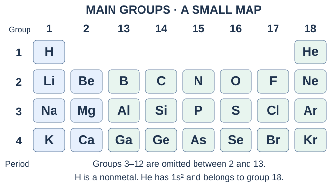
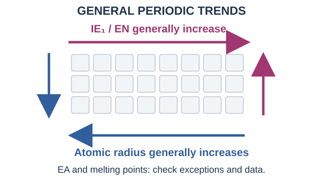
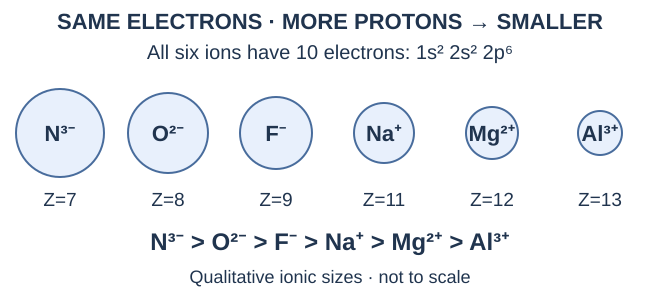

เรื่องนี้ต้องจำ: อ่านตารางธาตุจากการจัดเรียง e เปรียบเทียบสมบัติพร้อมเหตุผล และแยกข้อยกเว้นให้ได้ · ลองตอบทีละส่วนก่อนเปิดเฉลย แต่ละข้อย่อยมีพื้นที่เขียนของตัวเอง
1. อ่านตารางธาตุให้เป็น
กฎพิริออดิกปัจจุบัน: สมบัติของธาตุแปรซ้ำเป็นช่วง ๆ เมื่อเรียงตาม เลขอะตอม Z ตารางมาตรฐานมี 18 หมู่แนวตั้ง และ 7 คาบแนวนอน ธาตุหมู่หลักหรือเรพรีเซนเททีฟคือหมู่ 1, 2, 13–18 ส่วนหมู่ 3–12 อยู่บริเวณบล็อก d
| ผู้พัฒนา | แนวคิดที่จำ |
|---|---|
| เดอเบอไรเนอร์ | จัดธาตุสมบัติคล้ายกันเป็นชุดสาม; มวลอะตอมธาตุกลางใกล้ค่าเฉลี่ยอีกสองธาตุ |
| นิวแลนด์ | เรียงมวลอะตอม พบสมบัติคล้ายกันทุกธาตุที่แปดในชุดที่ศึกษา |
| เมนเดเลเอฟ | อาศัยมวลอะตอมและสมบัติ เว้นช่องว่างและทำนายธาตุที่ยังไม่พบ |
| โมสลีย์ | เลขอะตอมเป็นหลักในการเรียงตารางธาตุปัจจุบัน |

คำถาม 1 — หมู่ คาบ และหลักการเรียง
ก. ตารางปัจจุบันเรียงตามอะไร ต่างจากแนวคิดสำคัญของเมนเดเลเอฟอย่างไร?
ข. แนวตั้งและแนวนอนเรียกว่าอะไร? ธาตุหมู่หลักอยู่หมู่ใดบ้าง?
ก. เรียงตามเลขอะตอม Z; เมนเดเลเอฟอาศัยมวลอะตอมร่วมกับสมบัติและเว้นช่องทำนายธาตุ
ข. แนวตั้งคือหมู่ แนวนอนคือคาบ; หมู่หลักคือ 1, 2, 13, 14, 15, 16, 17, 18
2. จากการจัดเรียงอิเล็กตรอน → หมู่และคาบ
ใช้การจัดเรียงของอะตอมเป็นกลางในสถานะพื้น: คาบ = ค่า n สูงสุดที่มีอิเล็กตรอน; สำหรับหมู่หลัก นับเวเลนซ์อิเล็กตรอนในชั้นนอกสุด แล้วเทียบตาราง ไม่ใช้เลขหมู่ 13–18 เป็นจำนวนอิเล็กตรอนตรง ๆ
| หมู่ปัจจุบัน (ระบบ A เดิม) | ชั้นนอกทั่วไป | เวเลนซ์ e |
|---|---|---|
| 1 (IA) | ns¹ | 1 |
| 2 (IIA) | ns² | 2 |
| 13 (IIIA) | ns²np¹ | 3 |
| 14 (IVA) | ns²np² | 4 |
| 15 (VA) | ns²np³ | 5 |
| 16 (VIA) | ns²np⁴ | 6 |
| 17 (VIIA) | ns²np⁵ | 7 |
| 18 (VIIIA) | ns²np⁶ | 8 |
ข้อยกเว้น: He = 1s² มีเวเลนซ์ 2 แต่จัดอยู่หมู่ 18 เพราะชั้นแรกเต็มและสมบัติคล้ายแก๊สมีสกุล ส่วน H = 1s¹ อยู่หมู่ 1 แต่เป็นอโลหะ ไม่ใช่โลหะแอลคาไล ธาตุหมู่หลักอยู่บล็อก s หรือ p; He อยู่บล็อก s ตามการจัดเรียง แม้อยู่หมู่ 18
ถ้าให้ไอออนมา: ย้อนหาอะตอมเป็นกลางก่อน เช่น Ca²⁺ มี 2,8,8 แต่ธาตุ Ca อยู่คาบ 4 ไม่ใช่คาบ 3
คำถาม 2 — หาตำแหน่งอย่างมีขั้นตอน
ก. A: [Ne] 3s²3p⁵ และ B: [Ar] 4s² อยู่หมู่และคาบใด มีเวเลนซ์เท่าใด?
ข. He มี 2 อิเล็กตรอน ทำไมไม่จัดหมู่ 2?
ค. X²⁺ มี 18 อิเล็กตรอน จงหา Z ของ X และระบุหมู่–คาบของธาตุ X
ก. A = Cl หมู่ 17 (VIIA) คาบ 3 เวเลนซ์ 7; B = Ca หมู่ 2 (IIA) คาบ 4 เวเลนซ์ 2
ข. 1s² เต็มชั้นแรกแล้วและมีสมบัติคล้ายแก๊สมีสกุล จึงอยู่หมู่ 18 ไม่ใช้กฎเวเลนซ์ 2 อย่างเดียว
ค. Z = 18+2 = 20 เป็น Ca; อะตอมเป็นกลาง [Ar] 4s² จึงหมู่ 2 คาบ 4
3. โลหะ อโลหะ และกึ่งโลหะ
| ชนิด | สมบัติทั่วไปและตัวอย่าง |
|---|---|
| โลหะ | อยู่ซ้ายและกลางตาราง นำไฟฟ้า/ความร้อนได้ดี ตีแผ่หรือดึงเป็นเส้นได้ มักเสีย e; เช่น Na, Mg, Al |
| อโลหะ | อยู่ด้านขวาบนและ H มักนำไฟฟ้าไม่ดี ของแข็งมักเปราะ รับหรือใช้อิเล็กตรอนร่วมกัน; เช่น C, N, O, Cl |
| กึ่งโลหะ | สมบัติบางอย่างคล้ายโลหะและบางอย่างคล้ายอโลหะ หลายชนิดเป็นสารกึ่งตัวนำ; ตัวอย่างที่ใช้บ่อย B, Si, Ge, As, Sb, Te |
แนวโน้มความเป็นโลหะ: เพิ่มเมื่อลงล่างในหมู่ และเพิ่มเมื่อไปทางซ้ายในคาบ ตัวอย่างหมู่ 14: C เป็นอโลหะ; Si และ Ge เป็นกึ่งโลหะ; Sn และ Pb เป็นโลหะ
ใช้คำว่า “โดยทั่วไป”: แกรไฟต์เป็นอโลหะแต่นำไฟฟ้าได้ สถานะของแข็งไม่ได้แปลว่าเป็นโลหะ และธาตุหมู่เดียวกันไม่ได้มีสมบัติทางกายภาพเหมือนกันทุกอย่าง
คำถาม 3 — จำแนกพร้อมเหตุผล
ก. จำแนก Na, Si และ Cl แล้วเรียง Na, Mg, Al ตามความเป็นโลหะจากมากไปน้อย
ข. “อโลหะทุกชนิดไม่นำไฟฟ้า” และ “ธาตุหมู่ 14 ทุกตัวเป็นอโลหะ” ถูกหรือไม่? ยกตัวอย่าง
ก. Na โลหะ, Si กึ่งโลหะ, Cl อโลหะ; ความเป็นโลหะ Na > Mg > Al เพราะอยู่คาบเดียวกันและลดจากซ้ายไปขวา
ข. ไม่ถูกทั้งคู่: แกรไฟต์นำไฟฟ้าได้; Sn และ Pb ในหมู่ 14 เป็นโลหะ
4. ขนาดอะตอม: นับชั้นก่อน แล้วดูแรงดึง
หมอกอิเล็กตรอนไม่มีขอบตายตัว จึงมีรัศมีหลายแบบ เช่น รัศมีโคเวเลนต์ = ครึ่งหนึ่งของระยะระหว่างนิวเคลียสของอะตอมชนิดเดียวกันที่สร้างพันธะเดี่ยวกัน ควรเทียบข้อมูลที่ใช้นิยามเดียวกัน โดยเฉพาะเมื่อมีแก๊สมีสกุลรวมอยู่

| ทิศทาง | ขนาดอะตอม | อธิบาย |
|---|---|---|
| ลงล่างในหมู่ | เพิ่ม | ชั้นพลังงานและการกำบังเพิ่ม อิเล็กตรอนวงนอกอยู่ไกลขึ้น |
| ซ้าย → ขวาในคาบ | โดยทั่วไปลด | อยู่ชั้นหลักเดียวกัน แต่ประจุนิวเคลียสยังผลที่ดึง e วงนอกเพิ่ม |
อิเล็กตรอนชั้นในช่วย กำบัง (shielding) แรงดึงจากนิวเคลียส; แรงดึงสุทธิที่อิเล็กตรอนรับเรียกว่า ประจุนิวเคลียสยังผล (Zeff) จำนวน e มากกว่าไม่ได้แปลว่าอะตอมใหญ่กว่าเสมอ
คำถาม 4 — เรียงขนาดและบอกสาเหตุ
ก. เรียง K, Na, Mg และ Cl จากอะตอมใหญ่ไปเล็ก
ข. ทำไม Cl มีโปรตอนและอิเล็กตรอนมากกว่า Na แต่อะตอมเล็กกว่า?
ก. K > Na > Mg > Cl; K มีชั้นนอก n=4 ส่วนอีกสามธาตุ n=3 และในคาบ 3 รัศมีลดจาก Na ไป Cl
ข. e วงนอกยังอยู่ n=3 เหมือนกัน แต่แรงดึงนิวเคลียสยังผลของ Cl สูงกว่า จึงดึงหมอก e เข้ามาใกล้
5. ขนาดไอออนและอนุภาคที่มี e เท่ากัน
เทียบธาตุชนิดเดียวกัน: ไอออนบวกเล็กกว่าอะตอมเดิม เพราะเสีย e และอาจเสียชั้นนอกทั้งชั้น; ไอออนลบใหญ่กว่าอะตอมเดิม เพราะรับ e แล้วแรงผลักระหว่าง e เพิ่ม จำนวนโปรตอนยังเท่าเดิม
เทียบชุดไอโซอิเล็กทรอนิกส์: เมื่อมีการจัดเรียง e เหมือนกัน ตัวที่มีโปรตอนมากกว่าจะดึง e ได้แรงกว่าและเล็กกว่า อย่าดูเพียงเครื่องหมายประจุของไอออนต่างธาตุที่จำนวน e ไม่เท่ากัน

คำถาม 5 — นับ e แล้วค่อยเรียงรัศมี
ก. ให้ Z ของ O, F, Na, Mg, Al เท่ากับ 8, 9, 11, 12, 13 จงนับ e ของ O²⁻, F⁻, Na⁺, Mg²⁺, Al³⁺ แล้วเรียงขนาด
ข. เปรียบเทียบ Na กับ Na⁺ และ Cl กับ Cl⁻ โดยอธิบายการเปลี่ยนแปลง
ก. ทุกตัวมี 10 e; ขนาด O²⁻ > F⁻ > Na⁺ > Mg²⁺ > Al³⁺ เพราะ Z เพิ่มตามลำดับ
ข. Na > Na⁺: เสีย e ชั้น 3; Cl⁻ > Cl: จำนวนโปรตอนเดิมแต่มี e เพิ่มและผลักกันมากขึ้น
6. พลังงานไอออไนเซชันลำดับแรก (IE₁)
IE₁ คือพลังงานที่ใช้ดึง e หนึ่งตัวจากอะตอมอิสระในสถานะแก๊สและสถานะพื้น: X(g) → X⁺(g) + e⁻ กระบวนการนี้ดูดพลังงาน ค่า IE เป็นบวก มักใช้หน่วย kJ mol⁻¹
โดยทั่วไป IE₁ เพิ่มจากซ้ายไปขวา และลดเมื่อลงล่าง เพราะ e ที่อยู่ไกลและถูกกำบังมากดึงออกง่ายขึ้น He มี IE₁ สูงมากที่สุดในบรรดาธาตุ
| คู่ที่ต้องจำ | เหตุผลที่ขัดกับแนวโน้มเรียบ ๆ |
|---|---|
| IE₁(Be) > IE₁(B); IE₁(Mg) > IE₁(Al) | B และ Al เสีย e จาก np¹ ซึ่งพลังงานสูงและดึงออกง่ายกว่า ns² ของธาตุก่อนหน้า |
| IE₁(N) > IE₁(O); IE₁(P) > IE₁(S) | O และ S มี np⁴ จึงมี e จับคู่ในออร์บิทัลหนึ่งและผลักกัน; เอาตัวที่จับคู่ออกง่ายกว่า np³ ที่อยู่เดี่ยวทุกกล่อง |
ลำดับ IE₁ จากน้อยไปมากที่ควรไล่ได้:
คาบ 2: Li < B < Be < C < O < N < F < Ne
คาบ 3: Na < Al < Mg < Si < S < P < Cl < Ar
คำว่า “เต็มชั้นย่อย/ครึ่งชั้นย่อย” ใช้ช่วยจำ แต่เหตุผลต้องระบุให้ได้ว่าเริ่มดึงจาก np¹ แทน ns² หรือ np⁴ มี e จับคู่และผลักกัน ไม่ใช่ว่าทุกธาตุที่มีชั้นย่อยเต็มต้องมี IE สูงกว่าธาตุอื่นทุกตัว
คำถาม 6 — บอกตัวที่ดึง e ออกง่ายกว่า
ก. ระหว่าง Na กับ K ตัวใดมี IE₁ ต่ำกว่า? เพราะอะไร?
ข. ระหว่าง Mg กับ Al และระหว่าง P กับ S ตัวใดมี IE₁ ต่ำกว่า? อธิบายแยกสองกรณี
ค. เขียนลำดับ IE₁ จากน้อยไปมากของ Na, Mg, Al, Si, P, S, Cl, Ar โดยวงคู่ที่สลับจากแนวโน้มตามคาบ
ก. K ต่ำกว่า เพราะ e วงนอกอยู่ชั้น 4 ไกลกว่าและถูกกำบังมากกว่า Na ที่ชั้น 3
ข. Al ต่ำกว่า Mg: เอา 3p¹ ออกง่ายกว่า 3s²; S ต่ำกว่า P: 3p⁴ มี e จับคู่และแรงผลัก ทำให้เอาออกง่ายกว่า 3p³
ค. Na < Al < Mg < Si < S < P < Cl < Ar; คู่ที่ต้องระวังคือ Al/Mg และ S/P
7. IE ต่อเนื่อง: จุดกระโดดบอกเวเลนซ์
IE₂: X⁺(g) → X²⁺(g) + e⁻ ไม่ใช่ดึงสองตัวพร้อมกันจากอะตอมเป็นกลาง สำหรับธาตุเดียวกัน IE₁ < IE₂ < IE₃ < … เพราะ e ที่เหลือถูกยึดแน่นขึ้น
จุดกระโดดขนาดใหญ่มาก เกิดเมื่อเอาเวเลนซ์ออกหมดแล้วเริ่มดึง e ชั้นใน เช่น กระโดดระหว่าง IE₂ กับ IE₃ บ่งชี้เวเลนซ์ 2 และโดยทั่วไปเป็นหมู่ 2 สำหรับธาตุหมู่หลัก อย่าสับสนว่าค่าที่เริ่มสูงเป็นจำนวนเวเลนซ์
| กระโดดระหว่าง | เวเลนซ์ e ที่ดึงออกไปแล้ว | หมู่หลัก |
|---|---|---|
| IE₁ → IE₂ | 1 | 1 (IA) |
| IE₂ → IE₃ | 2 | 2 (IIA) |
| IE₃ → IE₄ | 3 | 13 (IIIA) |
| IE₄ → IE₅ | 4 | 14 (IVA) |
| IE₅ → IE₆ | 5 | 15 (VA) |
| IE₆ → IE₇ | 6 | 16 (VIA) |
| IE₇ → IE₈ | 7 | 17 (VIIA) |
| IE₈ → IE₉ | 8 | 18 (VIIIA), ยกเว้น He มีเพียง 2 e ทั้งอะตอม |
ใช้เมื่อมีข้อมูลต่อเนื่องพอให้เห็นการเปลี่ยนจากเวเลนซ์เป็นชั้นในชัดเจน และโจทย์ระบุว่าเป็นธาตุหมู่หลัก; IE₁ ค่าเดียวระบุหมู่ไม่ได้ H มีเพียง 1 e จึงไม่มี IE₂ และ He มี 2 e จึงไม่มี IE₃ ทั้งสองไม่มี e ชั้นในให้ดึงต่อ
คำถาม 7 — อ่านข้อมูลแทนการท่อง
ก. ข้อมูลจำลองของธาตุหมู่หลัก X: IE₁–IE₄ = 500, 1500, 7700, 10500 kJ mol⁻¹ จุดกระโดดอยู่ไหน? X ควรมีเวเลนซ์และอยู่หมู่ใด?
ข. หากกระโดดระหว่าง IE₃ กับ IE₄ ธาตุหมู่หลักควรอยู่หมู่ใด? เขียนกระบวนการของ IE₃
ก. กระโดดระหว่าง IE₂ กับ IE₃ จึงมีเวเลนซ์ 2 และเป็นหมู่ 2; ข้อมูลจำลองนี้ยังไม่พอระบุชื่อธาตุหรือคาบ
ข. เวเลนซ์ 3 → หมู่ 13 (IIIA); X²⁺(g) → X³⁺(g) + e⁻
8. EA กับ EN: รับ e อิสระ หรือดึง e ในพันธะ?
| สมบัติ | พิจารณาอะไร | หน่วย |
|---|---|---|
| IE | พลังงานดึง e ออกจากอะตอมหรือไอออนแก๊ส | kJ mol⁻¹ |
| EA / สัมพรรคภาพอิเล็กตรอน | พลังงานเกี่ยวกับการรับ e: X(g) + e⁻ → X⁻(g) | kJ mol⁻¹ |
| EN / อิเล็กโทรเนกาติวิตี | ความสามารถดึงอิเล็กตรอนที่ใช้ร่วมกันในพันธะเข้าหาตน | ไม่มีหน่วย เช่น สเกลพอลิง |
EA ต้องตรวจข้อตกลงเครื่องหมาย: ถ้าใช้การเปลี่ยนพลังงาน ΔE ของการรับ e การคายพลังงานมีค่าลบ และ “คายมากกว่า” คือค่าลบมากกว่า เช่น Cl ประมาณ −349 ส่วน F ประมาณ −328 kJ mol⁻¹ แต่บางโจทย์นิยาม EA เป็นขนาดพลังงานที่คายออกจึงใช้ค่าบวก
การรับ e โดยทั่วไปเอื้อต่อการคายพลังงานทางด้านขวาของคาบ แต่ EA ไม่เรียบสม่ำเสมอ: หมู่ 2, 15, 18 มีข้อยกเว้นเด่น และ Cl รับ e แล้วคายพลังงานมากกว่า F เพราะ 2p ของ F เล็กและมีแรงผลักมาก
EN โดยทั่วไปเพิ่มไปทางขวาและขึ้นบน; F สูงสุด ตารางพอลิงระดับพื้นฐานมักไม่ให้ค่าแก๊สมีสกุล จึงไม่ควรเรียง EN ให้หมู่ 18 สูงกว่า F อัตโนมัติ
ตารางเทียบแนวโน้มในที่เดียว
| สมบัติ | ซ้าย → ขวาในคาบ | บน → ล่างในหมู่ |
|---|---|---|
| รัศมีอะตอม | โดยทั่วไปลด | เพิ่ม |
| IE₁ | โดยทั่วไปเพิ่ม; ระวังคู่หมู่ 2/13 และ 15/16 | โดยทั่วไปลด |
| EN | โดยทั่วไปเพิ่ม; F สูงสุด ไม่ลากแนวโน้มผ่านแก๊สมีสกุลอัตโนมัติ | โดยทั่วไปลด |
| EA: ขนาดพลังงานที่คายเมื่อรับ e | มีแนวโน้มคายมากขึ้น แต่ไม่สม่ำเสมอ | มักคายน้อยลง แต่มีข้อยกเว้นเด่น เช่น Cl คายมากกว่า F และ S คายมากกว่า O |
ลำดับ EN ที่พบบ่อย (พอลิง ค่าประมาณ): F 3.98 > O 3.44 > Cl 3.16 > N 3.04 > Br 2.96 > I 2.66 > S 2.58 > C 2.55 > H 2.20 ถ้าโจทย์ให้ค่าปัดเศษ ให้ใช้ข้อมูลของโจทย์ โดยเฉพาะคู่ที่ค่าใกล้กัน
คำถาม 8 — แยกความหมายและอ่านเครื่องหมาย
ก. การรับ e ของอะตอม Cl(g) กับการดึง e ร่วมในพันธะ H–Cl ใช้สมบัติใด?
ข. ถ้า ΔE รับ e ของ A = −300 และ B = −350 kJ mol⁻¹ ตัวใดคายพลังงานมากกว่า?
ค. “F มี EN สูงสุด ดังนั้นต้องรับ e แล้วคายพลังงานมากกว่า Cl” ถูกหรือไม่?
ง. เรียง F, O, Cl, N จาก EN มากไปน้อย แล้วบอกว่า EN โดยทั่วไปเปลี่ยนอย่างไรเมื่อลงล่างในหมู่
ก. Cl(g) รับ e ใช้ EA; การดึง e ในพันธะใช้ EN (Cl ดึงมากกว่า H)
ข. B คาย 350 มากกว่า A ที่คาย 300; เปรียบเทียบขนาดพลังงานที่คาย ไม่ใช่สรุปจากการเป็นตัวเลขมากกว่า
ค. ไม่ถูก: EN และ EA เป็นคนละสมบัติ F มี EN สูงสุด แต่ Cl รับ e แล้วคายพลังงานมากกว่า F
ง. F > O > Cl > N ตามค่าพอลิงที่แสดง; EN โดยทั่วไปลดเมื่อลงล่าง เพราะชั้นพลังงานและการกำบังเพิ่ม
9. ออกไซด์ตามคาบ และจุดหลอมเหลวที่ไม่เป็นลูกศรเดียว
ตัวอย่างคาบ 3: จากซ้ายไปขวา ออกไซด์เปลี่ยนจากลักษณะเบส ผ่านแอมโฟเทอริก ไปเป็นกรด
| ตัวอย่างออกไซด์ | ลักษณะ |
|---|---|
| Na₂O, MgO | ออกไซด์เบส: ทำปฏิกิริยากับกรด |
| Al₂O₃ | แอมโฟเทอริก: ทำปฏิกิริยากับทั้งกรดและเบส |
| SiO₂, P₄O₁₀, SO₃, Cl₂O₇ | ออกไซด์กรด: ทำปฏิกิริยากับเบส |
เช่น Na₂O + H₂O → 2NaOH; SO₃ + H₂O → H₂SO₄ แต่ ออกไซด์กรดไม่ได้ทำปฏิกิริยากับน้ำทุกตัว เช่น SiO₂ และอโลหะบางชนิดให้ ออกไซด์เป็นกลาง เช่น CO, NO
จุดหลอมเหลว/เดือดต้องดูโครงสร้างและแรงยึดเหนี่ยว: ไม่ใช้ลูกศร IE หรือ EN แทน ในคาบ 3 Si มีโครงร่างโคเวเลนต์และจุดหลอมเหลวสูง; P₄, S₈ และ Cl₂ เป็นโมเลกุล ส่วน Ar เป็นอะตอมเดี่ยว จึงมีแนวโน้มต่างกัน
คำถาม 9 — จำแนกแล้วระวังการเหมารวม
ก. จำแนก Na₂O, Al₂O₃, SO₃ และ CO เป็นออกไซด์เบส กรด แอมโฟเทอริก หรือเป็นกลาง
ข. ทำไม “EN เพิ่มตามคาบ จุดหลอมเหลวจึงต้องเพิ่มตามคาบ” ใช้ไม่ได้?
ก. Na₂O เบส; Al₂O₃ แอมโฟเทอริก; SO₃ กรด; CO เป็นกลาง
ข. จุดหลอมเหลวขึ้นกับชนิดโครงสร้างและแรงยึดเหนี่ยว เช่น โครงร่างของ Si เทียบกับโมเลกุล Cl₂ ไม่ได้ขึ้นกับ EN อย่างเดียว
10. สมบัติเด่นของแต่ละหมู่หลัก
| หมู่ | สมาชิกที่ควรคุ้นชื่อ | สมบัติ/ประจุที่พบบ่อย |
|---|---|---|
| 1 / IA | Li, Na, K — แอลคาไล | โลหะ; ไอออน +1 เช่น Na⁺ |
| 2 / IIA | Be, Mg, Ca — แอลคาไลน์เอิร์ท | โลหะ; ไอออน +2 เช่น Mg²⁺ |
| 13 / IIIA | B, Al — กลุ่มโบรอน | B กึ่งโลหะ, Al โลหะ; Al³⁺ พบบ่อย |
| 14 / IVA | C, Si, Ge, Sn, Pb — กลุ่มคาร์บอน | มีทั้งอโลหะ กึ่งโลหะ โลหะ; มักพบเลขออกซิเดชัน +4 และธาตุหนักมี +2 |
| 15 / VA | N, P — กลุ่มไนโตรเจน | ตัวอย่างเลขออกซิเดชัน −3, +3, +5 ในสารประกอบ |
| 16 / VIA | O, S — แชลโคเจน | O²⁻, S²⁻ พบบ่อย; S มี +4, +6 ในสารประกอบ |
| 17 / VIIA | F, Cl, Br, I — แฮโลเจน | อโลหะ; ไอออน −1 เช่น Cl⁻ |
| 18 / VIIIA | He, Ne, Ar, Kr, Xe — แก๊สมีสกุล | ชั้นนอกเต็ม; ตัวอย่างคุ้นเคยเป็นแก๊สอะตอมเดี่ยวและเกิดปฏิกิริยายาก |
เลขออกซิเดชันไม่ใช่ประจุไอออนเดี่ยวเสมอ: C ใน CO₂ มี +4 แต่ไม่ได้หมายความว่ามี C⁴⁺ อิสระอยู่ในโมเลกุล หมู่ 14 มักใช้อิเล็กตรอนร่วมกันแทนการสร้างไอออน ±4 ง่าย ๆ
ข้อยกเว้นพื้นฐาน: O มัก −2 แต่ในเปอร์ออกไซด์เป็น −1; F ในสารประกอบเป็น −1 ขณะที่ Cl, Br, I มีเลขออกซิเดชันบวกได้ด้วย; ธาตุอิสระทุกชนิดมีเลขออกซิเดชัน 0 ไม่ว่าจะอยู่หมู่ใด
คำถาม 10 — ประจุที่ควรจำ กับสิ่งที่ไม่ควรเหมารวม
ก. เขียนไอออนเดี่ยวที่พบบ่อยของ K, Mg, Al, O และ F
ข. C ใน CO₂ มีเลขออกซิเดชัน +4 แปลว่าโมเลกุลมี C⁴⁺ อิสระหรือไม่? แล้ว Cl₂ มีเลขออกซิเดชันเท่าใด?
ก. K⁺, Mg²⁺, Al³⁺, O²⁻ และ F⁻ ตามลำดับ
ข. ไม่ใช่: CO₂ เป็นสารโคเวเลนต์ ค่า +4 เป็นเลขออกซิเดชัน; Cl₂ เป็นธาตุอิสระจึง 0 ไม่ใช่ −1
11. หมู่ 1 และ 2: โลหะที่เสีย e ง่าย
หมู่ 1: โลหะแอลคาไลมี ns¹ เสีย e เกิด M⁺ ได้ง่าย โดยทั่วไปว่องไวต่อน้ำมากขึ้นเมื่อลงล่าง เช่น Li < Na < K ปฏิกิริยากับน้ำให้ไฮดรอกไซด์และ H₂: 2Na(s) + 2H₂O(l) → 2NaOH(aq) + H₂(g)
หมู่ 2: มี ns² มักให้ M²⁺ และโดยทั่วไปว่องไวขึ้นเมื่อลงล่าง แต่ ไม่ใช่ทุกตัวทำปฏิกิริยากับน้ำเย็นเหมือนกัน: Be แทบไม่ทำปฏิกิริยา; Mg กับน้ำเย็นช้ามากและทำกับไอน้ำได้เมื่อร้อน; Ca ทำกับน้ำเย็นให้ Ca(OH)₂ และ H₂
สมการตัวอย่าง: Ca(s) + 2H₂O(l) → Ca(OH)₂ + H₂(g); สำหรับไอน้ำ Mg(s) + H₂O(g) → MgO(s) + H₂(g) เมื่อให้ความร้อน ผลิตภัณฑ์จึงต้องพิจารณาสภาวะด้วย
คำถาม 11 — ใช้เวเลนซ์ทำนายปฏิกิริยา
ก. เรียง Li, Na, K ตามความว่องไวต่อน้ำจากมากไปน้อย และอธิบายเชื่อม IE₁
ข. เติมสัมประสิทธิ์ __Na + __H₂O → __NaOH + __H₂ และ __Ca + __H₂O → __Ca(OH)₂ + __H₂
ค. ทำไมไม่ควรทำนายว่า Mg กับ Ca ใส่น้ำเย็นแล้วจะเห็นผลเหมือนกัน?
ก. K > Na > Li; ลงล่าง IE₁ โดยทั่วไปลด จึงเสีย e วงนอกง่ายขึ้น ทั้งนี้อัตราจริงยังขึ้นกับสภาวะ
ข. Na: 2,2,2,1; Ca: 1,2,1,1 และทั้งคู่ได้แก๊ส H₂
ค. แม้หมู่เดียวกันแต่ความว่องไวต่างกัน Mg กับน้ำเย็นช้ามาก ส่วน Ca ทำปฏิกิริยาได้ชัดเจน; Mg กับไอน้ำร้อนให้ MgO ต่างจากไฮดรอกไซด์ในตัวอย่างน้ำเย็น
12. หมู่ 17 และ 18: แฮโลเจนกับแก๊สมีสกุล
แฮโลเจน: ชั้นนอก ns²np⁵ มีเวเลนซ์ 7 มักรับ e เป็น X⁻ ธาตุที่พบทั่วไปอยู่เป็น X₂; ที่ประมาณ 25 °C และ 1 atm: F₂ แก๊สเหลืองอ่อน, Cl₂ แก๊สเหลืองอมเขียว, Br₂ ของเหลวสีน้ำตาลแดง, I₂ ของแข็งสีเทาดำและมีไอสีม่วง
สำหรับ F₂, Cl₂, Br₂, I₂ จุดหลอมเหลว/เดือดโดยทั่วไปเพิ่มลงล่าง แต่ ความสามารถรับ e ในปฏิกิริยารีดอกซ์ (อำนาจออกซิไดส์) ลดลง: F₂ > Cl₂ > Br₂ > I₂ ตัวที่แรงกว่าจึงแทนที่แฮไลด์ของตัวที่อ่อนกว่าได้ เช่น Cl₂ + 2Br⁻ → 2Cl⁻ + Br₂ ส่วน Br₂ ไม่แทนที่ Cl⁻ ภายใต้เงื่อนไขปกติของการทดสอบนี้
แก๊สมีสกุล: He มี 1s² ที่เหลือมี ns²np⁶ ตัวอย่าง He, Ne, Ar, Kr, Xe เป็นแก๊สอะตอมเดี่ยว มีจุดเดือดต่ำและเกิดปฏิกิริยายาก แต่ ไม่ใช่ไม่เกิดเลย เช่น Xe สร้าง XeF₂ ได้ในสภาวะเหมาะสม
คำถาม 12 — ทำนายให้ตรงชนิดอนุภาค
ก. ที่ 25 °C และ 1 atm: Cl₂, Br₂ และ I₂ อยู่สถานะใด?
ข. Cl₂ กับสารละลาย Br⁻ และ Br₂ กับสารละลาย Cl⁻ คู่ใดเกิดการแทนที่? เขียนสมการของคู่ที่เกิด
ค. “ธาตุหมู่ 18 มีเวเลนซ์ 8 ทุกตัวและไม่มีสารประกอบเลย” ผิดตรงไหน?
ก. Cl₂ แก๊ส, Br₂ ของเหลว, I₂ ของแข็ง (ไอของ I₂ เป็นสีม่วง ไม่ใช่สีของของแข็ง)
ข. Cl₂ ออกซิไดส์ Br⁻: Cl₂ + 2Br⁻ → 2Cl⁻ + Br₂; Br₂ ไม่แทนที่ Cl⁻ ในการทดสอบทั่วไป อย่าสลับธาตุ X₂ กับไอออน X⁻
ค. He มีเวเลนซ์ 2 แต่เต็มชั้นแรก; แก๊สมีสกุลบางตัวเกิดสารประกอบได้ เช่น XeF₂ จึงควรจำว่าเกิดปฏิกิริยายาก
ก่อนทำข้อสอบ: ระบุอะตอมหรือไอออน → นับ e และหาชั้นนอก → ระบุหมู่–คาบ → เลือกสมบัติที่โจทย์ถาม → ใช้แนวโน้มพร้อมตรวจข้อยกเว้นและเครื่องหมายพลังงาน
แหล่งศึกษาต่อและตรวจสอบ
IPST / สสวท. · เคมี ม.4 เล่ม 1 · วิวัฒนาการตารางธาตุ / History · ขนาดอะตอม / Atomic size · ขนาดไอออน / Ionic size · IE · EA · EN · OpenStax · Periodic trends · RSC · Pauling EN data · OpenStax · Electronegativity · OpenStax · Main-group families · OpenStax · Halogens
สรุป คำถาม เฉลย และภาพเรียบเรียงใหม่; ใช้หัวข้อ สสวท. เป็นกรอบ และตรวจนิยาม แนวโน้ม และข้อยกเว้นจากแหล่งข้างต้น
Recall goals: locate elements from electron configurations, compare properties with reasons, and recognize exceptions. Answer one section at a time before revealing solutions; every subpart has its own writing space.
1. Read the periodic table
Modern periodic law: elemental properties recur periodically when elements are ordered by atomic number Z. The standard table has 18 vertical groups and 7 horizontal periods. Main-group (representative) elements occupy groups 1, 2 and 13–18; groups 3–12 lie in the d-block region.
| Contributor | Memory point |
|---|---|
| Döbereiner | Triads: three similar elements; the middle atomic mass is approximately the mean of the other two |
| Newlands | Octaves: an eighth-element repetition among the elements he examined in mass order |
| Mendeleev | Used atomic masses and properties, left gaps and predicted undiscovered elements |
| Moseley | Established atomic number as the basis of modern ordering |
Question 1 — Groups, periods and ordering
a. What determines modern table order? How does this differ from Mendeleev’s main approach?
b. Name the vertical and horizontal arrangements. List all main-group numbers.
a. Atomic number Z; Mendeleev used masses with chemical properties and left predictive gaps.
b. Vertical: groups. Horizontal: periods. Main groups: 1, 2, 13, 14, 15, 16, 17 and 18.
2. Electron configuration → group and period
Use the neutral ground-state atom: the period is the highest occupied n. For main-group atoms, count electrons in the outermost shell and use the mapping below; group numbers 13–18 are not literal valence-electron counts.
| Modern group (old A label) | Usual outer shell | Valence e |
|---|---|---|
| 1 (IA) | ns¹ | 1 |
| 2 (IIA) | ns² | 2 |
| 13 (IIIA) | ns²np¹ | 3 |
| 14 (IVA) | ns²np² | 4 |
| 15 (VA) | ns²np³ | 5 |
| 16 (VIA) | ns²np⁴ | 6 |
| 17 (VIIA) | ns²np⁵ | 7 |
| 18 (VIIIA) | ns²np⁶ | 8 |
Exceptions: He = 1s² has two valence electrons but belongs to group 18 because its first shell is full and its chemistry resembles the noble gases. H = 1s¹ is in group 1 but is a nonmetal, not an alkali metal. Main-group elements belong to the s or p blocks; He is an s-block element by configuration despite its group-18 placement.
If given an ion: reconstruct the neutral atom first. Ca²⁺ has shells 2,8,8, but calcium belongs to period 4, not period 3.
Question 2 — Locate the neutral atom
a. Locate A: [Ne] 3s²3p⁵ and B: [Ar] 4s². Give group, period and valence-electron number.
b. He has two electrons. Why is it not in group 2?
c. X²⁺ contains 18 electrons. Find Z and locate element X.
a. A is Cl: group 17 (VIIA), period 3, seven valence electrons. B is Ca: group 2 (IIA), period 4, two.
b. Its 1s² configuration fills the first shell and gives noble-gas-like chemistry, placing it in group 18.
c. Z = 18+2 = 20. Neutral Ca is [Ar] 4s²: group 2, period 4.
3. Metals, nonmetals and metalloids
| Class | Typical properties and examples |
|---|---|
| Metal | Left and centre; good electrical/thermal conductors, malleable or ductile, often lose electrons: Na, Mg, Al |
| Nonmetal | Upper right and H; usually poor conductors, brittle when solid, gain or share electrons: C, N, O, Cl |
| Metalloid | A mixture of metallic and nonmetallic properties; many are semiconductors. Common examples: B, Si, Ge, As, Sb, Te |
Metallic character generally increases down a group and towards the left across a period. In group 14, C is a nonmetal; Si and Ge are metalloids; Sn and Pb are metals.
“Generally” matters: graphite is a conducting nonmetal. Being solid does not establish metallic character, and group members need not have identical physical properties.
Question 3 — Classify and explain
a. Classify Na, Si and Cl. Rank Na, Mg and Al from most to least metallic.
b. Are “all nonmetals are nonconductors” and “all group-14 elements are nonmetals” correct? Give counterexamples.
a. Na: metal; Si: metalloid; Cl: nonmetal. Metallic character: Na > Mg > Al, decreasing across period 3.
b. Neither is correct. Graphite conducts electricity; Sn and Pb are group-14 metals.
4. Atomic size: shells first, then nuclear attraction
An electron cloud has no sharp edge, so several radius definitions exist. The covalent radius is half the internuclear distance between identical singly bonded atoms. Compare radii defined consistently, especially when noble gases are included.
| Direction | Atomic size | Reason |
|---|---|---|
| Down a group | Increases | More occupied shells and shielding; outer electrons are farther away |
| Left → right across a period | Generally decreases | The same principal valence shell experiences increasing effective nuclear attraction |
Core electrons provide shielding. The net nuclear attraction felt by an electron is described by the effective nuclear charge, Zeff. More electrons do not automatically imply a larger atom.
Question 4 — Order sizes and explain
a. Rank K, Na, Mg and Cl from largest atom to smallest.
b. Why is Cl smaller than Na despite having more protons and electrons?
a. K > Na > Mg > Cl. K has n=4 valence electrons; the others have n=3, and radius generally decreases from Na towards Cl.
b. Both have n=3 valence electrons, but Cl exerts a larger effective nuclear attraction on that shell.
5. Ionic size and isoelectronic species
For the same element: a cation is smaller than its parent atom after electron loss, sometimes losing the entire outer shell. An anion is larger after electron gain and increased electron repulsion. Proton number remains unchanged.
For isoelectronic species: with the same electron configuration, more protons mean stronger attraction and a smaller radius. Charge sign alone does not rank unrelated ions with different electron totals.
Question 5 — Count electrons before comparing radii
a. Given Z = 8, 9, 11, 12 and 13 for O, F, Na, Mg and Al, count electrons in O²⁻, F⁻, Na⁺, Mg²⁺ and Al³⁺ and rank their radii.
b. Compare Na with Na⁺, and Cl with Cl⁻. Explain the changes.
a. Each has ten electrons. O²⁻ > F⁻ > Na⁺ > Mg²⁺ > Al³⁺ as proton number increases.
b. Na > Na⁺: the n=3 electron is lost. Cl⁻ > Cl: proton number is unchanged, but added electrons increase repulsion.
6. First ionization energy (IE₁)
IE₁ is the energy needed to remove one electron from an isolated gaseous ground-state atom: X(g) → X⁺(g) + e⁻. Ionization is endothermic, so IE is positive, commonly in kJ mol⁻¹.
IE₁ generally increases across a period and decreases down a group. More distant, strongly shielded electrons are easier to remove. Helium has the highest first ionization energy.
| Important pairs | Why the smooth trend fails |
|---|---|
| IE₁(Be) > IE₁(B); IE₁(Mg) > IE₁(Al) | B and Al lose an np¹ electron, which is higher in energy and easier to remove than the preceding ns² electron |
| IE₁(N) > IE₁(O); IE₁(P) > IE₁(S) | The np⁴ atoms O and S have a paired-electron repulsion; removing a paired electron is easier than removal from the singly occupied np³ arrangement |
Increasing IE₁ orders to reconstruct:
Period 2: Li < B < Be < C < O < N < F < Ne
Period 3: Na < Al < Mg < Si < S < P < Cl < Ar
“Filled/half-filled subshell” is a useful cue. Give the physical reason: removal from np¹ rather than ns², or paired-electron repulsion in np⁴. A filled subshell does not guarantee a higher IE than every other element.
Question 6 — Identify the easier electron removal
a. Which has the lower IE₁, Na or K? Explain.
b. Choose the lower IE₁ in Mg/Al and P/S. Explain each exception.
c. Order Na, Mg, Al, Si, P, S, Cl and Ar by increasing IE₁. Mark the two departures from smooth period order.
a. K: its n=4 valence electron is farther out and more shielded than the n=3 electron in Na.
b. Al < Mg because a 3p¹ electron is easier to remove than a 3s² electron. S < P because pairing in 3p⁴ adds repulsion compared with 3p³.
c. Na < Al < Mg < Si < S < P < Cl < Ar; mark Al/Mg and S/P.
7. Successive IE: use the large jump
IE₂: X⁺(g) → X²⁺(g) + e⁻. It does not remove two electrons simultaneously from a neutral atom. For one element, IE₁ < IE₂ < IE₃ < … because the remaining electrons are held more strongly.
A very large jump marks the change from removing valence electrons to removing a core electron. A jump between IE₂ and IE₃ indicates two valence electrons, normally group 2 for a main-group atom. Count electrons removed before the jump.
| Large jump between | Valence e already removed | Main group |
|---|---|---|
| IE₁ → IE₂ | 1 | 1 (IA) |
| IE₂ → IE₃ | 2 | 2 (IIA) |
| IE₃ → IE₄ | 3 | 13 (IIIA) |
| IE₄ → IE₅ | 4 | 14 (IVA) |
| IE₅ → IE₆ | 5 | 15 (VA) |
| IE₆ → IE₇ | 6 | 16 (VIA) |
| IE₇ → IE₈ | 7 | 17 (VIIA) |
| IE₈ → IE₉ | 8 | 18 (VIIIA); He has only two electrons in total |
Use enough successive data to identify core-electron removal clearly, with a main-group context. One IE₁ value alone does not determine a group. H has only one electron, so no IE₂ exists; He has two, so no IE₃ exists. Neither has a core-electron removal step.
Question 7 — Read the data
a. Illustrative main-group data for X: IE₁–IE₄ = 500, 1500, 7700, 10500 kJ mol⁻¹. Locate the jump and infer valence count and group.
b. A main-group atom has its large jump between IE₃ and IE₄. Give its group and write the IE₃ process.
a. Between IE₂ and IE₃: two valence electrons, group 2. These invented values are insufficient to establish an element identity or period.
b. Three valence electrons: group 13 (IIIA). X²⁺(g) → X³⁺(g) + e⁻.
8. EA versus EN: free electrons or bonded electrons?
| Property | What it describes | Unit |
|---|---|---|
| IE | Energy required to remove an electron from a gaseous atom or ion | kJ mol⁻¹ |
| EA / electron affinity | Energy associated with electron addition: X(g) + e⁻ → X⁻(g) | kJ mol⁻¹ |
| EN / electronegativity | Attraction of shared bonding electrons towards an atom | Dimensionless, e.g. Pauling scale |
Check the EA sign convention: if the electron-addition energy change ΔE is used, exothermic addition is negative. More energy released means more negative: approximately −349 for Cl versus −328 kJ mol⁻¹ for F. Some questions instead define EA as the positive magnitude of energy released.
Electron addition tends to become more exothermic towards the right, but EA is irregular. Groups 2, 15 and 18 show important exceptions. Cl releases more energy on electron addition than F: the compact F 2p shell has stronger electron repulsion.
EN generally increases rightwards and upwards; F has the highest value. Basic Pauling tables usually omit noble-gas values; do not automatically rank group 18 above F.
Compare the trends in one place
| Property | Left → right across a period | Top → bottom down a group |
|---|---|---|
| Atomic radius | Generally decreases | Increases |
| IE₁ | Generally increases; check group 2/13 and 15/16 pairs | Generally decreases |
| EN | Generally increases; F highest; do not extend automatically through noble gases | Generally decreases |
| EA: magnitude of energy released on addition | Broadly tends to release more energy, with irregularities | Often releases less energy, with important exceptions: Cl releases more than F; S more than O |
Common EN order (approximate Pauling values): F 3.98 > O 3.44 > Cl 3.16 > N 3.04 > Br 2.96 > I 2.66 > S 2.58 > C 2.55 > H 2.20. Use the question’s supplied rounded values, especially for close pairs.
Question 8 — Separate definitions and signs
a. Which property describes Cl(g) accepting an electron, and which describes attraction of shared electrons in H–Cl?
b. Electron-addition ΔE values are −300 for A and −350 kJ mol⁻¹ for B. Which releases more energy?
c. “F has the highest EN, so electron addition must release more energy for F than Cl.” Is this valid?
d. Rank F, O, Cl and N by decreasing EN, then state the general change down a group.
a. EA describes addition to Cl(g); EN describes bonding-electron attraction, which is greater for Cl than H.
b. B releases 350 compared with 300 for A. Compare the released-energy magnitude rather than calling the less negative number more exothermic.
c. No. EN and EA describe different processes. F has the highest EN, but Cl releases more energy on electron addition.
d. F > O > Cl > N using the Pauling values shown. EN generally decreases down a group as occupied shells and shielding increase.
9. Oxides across a period; melting points need structure
Period-3 examples: oxide character changes broadly from basic through amphoteric to acidic as we move right.
| Example oxides | Character |
|---|---|
| Na₂O, MgO | Basic: react with acids |
| Al₂O₃ | Amphoteric: reacts with both acids and bases |
| SiO₂, P₄O₁₀, SO₃, Cl₂O₇ | Acidic: react with bases |
Examples: Na₂O + H₂O → 2NaOH; SO₃ + H₂O → H₂SO₄. However, not every acidic oxide reacts with water: SiO₂ is a counterexample. Some nonmetal oxides are neutral, including CO and NO.
Melting/boiling points depend on structure and attractions, not a single IE or EN arrow. In period 3, Si has a covalent network and high melting point; P₄, S₈ and Cl₂ are molecular, whereas Ar is monatomic.
Question 9 — Classify without overgeneralizing
a. Classify Na₂O, Al₂O₃, SO₃ and CO.
b. Why does increasing EN across a period not guarantee increasing melting point?
a. Na₂O: basic; Al₂O₃: amphoteric; SO₃: acidic; CO: neutral.
b. Melting depends on bonding, structure and attractions: a Si network and Cl₂ molecules have very different structures. EN alone cannot rank them.
10. Recognize the main-group families
| Group | Familiar members | Typical properties / charges |
|---|---|---|
| 1 / IA | Li, Na, K — alkali metals | Metals; common +1 ions, e.g. Na⁺ |
| 2 / IIA | Be, Mg, Ca — alkaline earth metals | Metals; common +2 ions, e.g. Mg²⁺ |
| 13 / IIIA | B, Al — boron group | B is a metalloid; Al is a metal with common Al³⁺ |
| 14 / IVA | C, Si, Ge, Sn, Pb — carbon group | Nonmetal → metalloids → metals; +4 is common, with +2 important for heavier members |
| 15 / VA | N, P — nitrogen group | Examples of oxidation states: −3, +3, +5 in compounds |
| 16 / VIA | O, S — chalcogens | Common O²⁻ and S²⁻; S also has +4 and +6 in compounds |
| 17 / VIIA | F, Cl, Br, I — halogens | Nonmetals; common −1 ions, e.g. Cl⁻ |
| 18 / VIIIA | He, Ne, Ar, Kr, Xe — noble gases | Filled valence shells; familiar members are monatomic gases with low reactivity |
Oxidation state is not necessarily a monatomic-ion charge: carbon is +4 in CO₂, but the molecule does not contain a free C⁴⁺ ion. Group-14 atoms commonly share electrons rather than readily forming simple ±4 ions.
Basic exceptions: oxygen is usually −2 but is −1 in peroxides. Fluorine is −1 in compounds, while Cl, Br and I can also have positive oxidation states. Every free element has oxidation state 0, regardless of its group.
Question 10 — Recall charges without confusing oxidation states
a. Write the common monatomic ions of K, Mg, Al, O and F.
b. Does +4 for carbon in CO₂ mean a free C⁴⁺ ion is present? What is the oxidation state in Cl₂?
a. K⁺, Mg²⁺, Al³⁺, O²⁻ and F⁻, respectively.
b. No: +4 is an oxidation state in a covalent compound. Cl₂ is elemental chlorine, so its oxidation state is 0, not −1.
11. Groups 1 and 2: metals that lose electrons
Group 1: alkali metals have ns¹ and readily form M⁺. Reactivity with water generally increases down the group: Li < Na < K. Water reactions form hydroxide and hydrogen: 2Na(s) + 2H₂O(l) → 2NaOH(aq) + H₂(g).
Group 2: ns² atoms commonly form M²⁺ and generally become more reactive down the group. They do not all react identically with cold water. Be is essentially unreactive; Mg reacts very slowly with cold water but reacts with steam when heated; Ca reacts with cold water to give Ca(OH)₂ and H₂.
Examples: Ca(s) + 2H₂O(l) → Ca(OH)₂ + H₂(g); with steam and heating, Mg(s) + H₂O(g) → MgO(s) + H₂(g). Conditions affect the product.
Question 11 — Connect valence electrons to reactions
a. Rank Li, Na and K from most to least reactive with water and relate this to IE₁.
b. Balance __Na + __H₂O → __NaOH + __H₂ and __Ca + __H₂O → __Ca(OH)₂ + __H₂.
c. Why should Mg and Ca not be expected to behave identically in cold water?
a. K > Na > Li. IE₁ generally decreases down the group, making valence-electron loss easier; observed rates also depend on conditions.
b. Na coefficients: 2,2,2,1. Ca coefficients: 1,2,1,1. Both produce hydrogen gas.
c. Mg reacts very slowly with cold water, whereas Ca reacts visibly. Heated Mg with steam gives MgO rather than the hydroxide in the cold-water example.
12. Groups 17 and 18: halogens and noble gases
Halogens: ns²np⁵ gives seven valence electrons and common X⁻ ions. Familiar elemental halogens are X₂. Near 25 °C and 1 atm: F₂ is a pale-yellow gas; Cl₂ a yellow-green gas; Br₂ a red-brown liquid; I₂ a grey-black solid with violet vapour.
For F₂, Cl₂, Br₂ and I₂, melting/boiling points generally rise down the group, but oxidizing strength decreases: F₂ > Cl₂ > Br₂ > I₂. A stronger halogen displaces a weaker one from its halide: Cl₂ + 2Br⁻ → 2Cl⁻ + Br₂. Br₂ does not displace Cl⁻ under ordinary conditions of this test.
Noble gases: He has 1s²; the others have ns²np⁶. Familiar He, Ne, Ar, Kr and Xe are monatomic gases with low boiling points and low reactivity. Low reactivity is not impossibility: Xe can form compounds such as XeF₂ under suitable conditions.
Question 12 — Identify the species and predict
a. State the physical states of Cl₂, Br₂ and I₂ at 25 °C and 1 atm.
b. Compare Cl₂ with aqueous Br⁻ and Br₂ with aqueous Cl⁻. Which displacement occurs? Give its equation.
c. Correct “every group-18 atom has eight valence electrons and noble gases never form compounds”.
a. Cl₂: gas; Br₂: liquid; I₂: solid. Violet describes iodine vapour, not the grey-black solid.
b. Cl₂ oxidizes Br⁻: Cl₂ + 2Br⁻ → 2Cl⁻ + Br₂. Br₂ does not displace Cl⁻ in the usual test. Distinguish elemental X₂ from halide X⁻.
c. He has two valence electrons, filling its first shell. Some noble gases form compounds, such as XeF₂; their reactivity is low rather than absolutely absent.
Before solving: identify atom or ion → count electrons and find the neutral outer shell → locate group and period → choose the property asked → apply its trend, exceptions and energy sign convention.
Sources and further study
IPST / สสวท. · เคมี ม.4 เล่ม 1 · วิวัฒนาการตารางธาตุ / History · ขนาดอะตอม / Atomic size · ขนาดไอออน / Ionic size · IE · EA · EN · OpenStax · Periodic trends · RSC · Pauling EN data · OpenStax · Electronegativity · OpenStax · Main-group families · OpenStax · Halogens
Original summary, questions, solutions and diagrams; organized around IPST topics, with definitions, trends and exceptions checked against the references above.